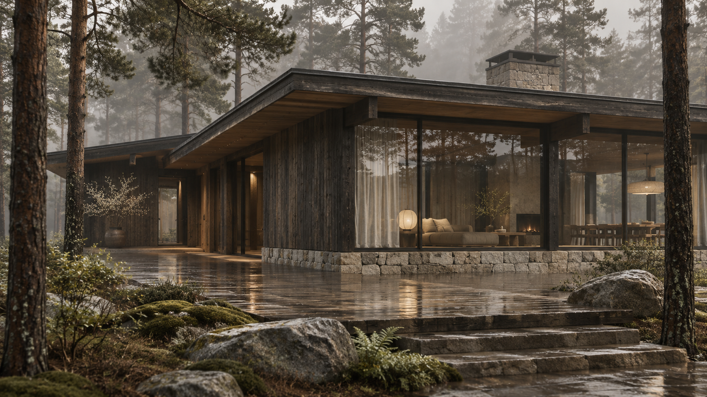

Дом, в котором
слышно себя.
Проектируем дома, которые продолжают ландшафт и отвечают вашему образу жизни.
Смотреть
проекты↓
Не собираем дом из приёмов. Сначала слушаем участок, свет, тишину вокруг и привычки тех, кто будет здесь жить.
Т
Выбранные
пространства
Три концептуальных проекта — разные ответы на один вопрос: как сделать природу частью дома.
Дом среди сосен
Дом раскрывается к утреннему свету и остаётся почти невидимым со стороны дороги. Каменный цоколь собирает рельеф, деревянный объём держит тепло.
Подробнее ↘
Общая гостиная выходит на закрытую террасу; спальни разведены по тихим крыльям. Прогулка от калитки к входу становится переходом из леса в дом.
Тихий склон
Четыре объёма собирают защищённый двор и оставляют взгляду дальний горизонт.
Подробнее ↘
Внутренний двор работает как летняя столовая и тихое место вне ветра. Светлая древесина со временем становится частью травы и камня.
Двор у воды
Терраса становится берегом, а вода отражает свет дома после заката.
Подробнее ↘
Низкий широкий карниз защищает стекло от летнего солнца. Внутри нет коридора: все основные пространства смотрят на воду.
Все изображения и проекты на этой странице — концептуальные.
Дом не начинается с фасада.
Начинается с того,
как вы живёте.
- 01
Слушаем участок
Рельеф, свет, ветер, существующие деревья и путь к дому становятся первыми линиями проекта.
- 02
Собираем сценарий
Обсуждаем утро, приезды гостей, работу из дома и тишину, которая вам нужна.
- 03
Находим материал
Дерево, камень и металл выбираем по тому, как они стареют и чувствуют себя именно здесь.
- 04
Остаёмся рядом
Сопровождаем реализацию, чтобы замысел не потерял точность в деталях.
ТИШЬ — это малая студия и внимательная работа над одним домом за раз.
Архитектура остаётся с человеком дольше, чем стройка.
Поэтому мы не торопим решения. Нам важны честные материалы, ясная планировка и дом, который будет хорош и в первый день, и через много лет.